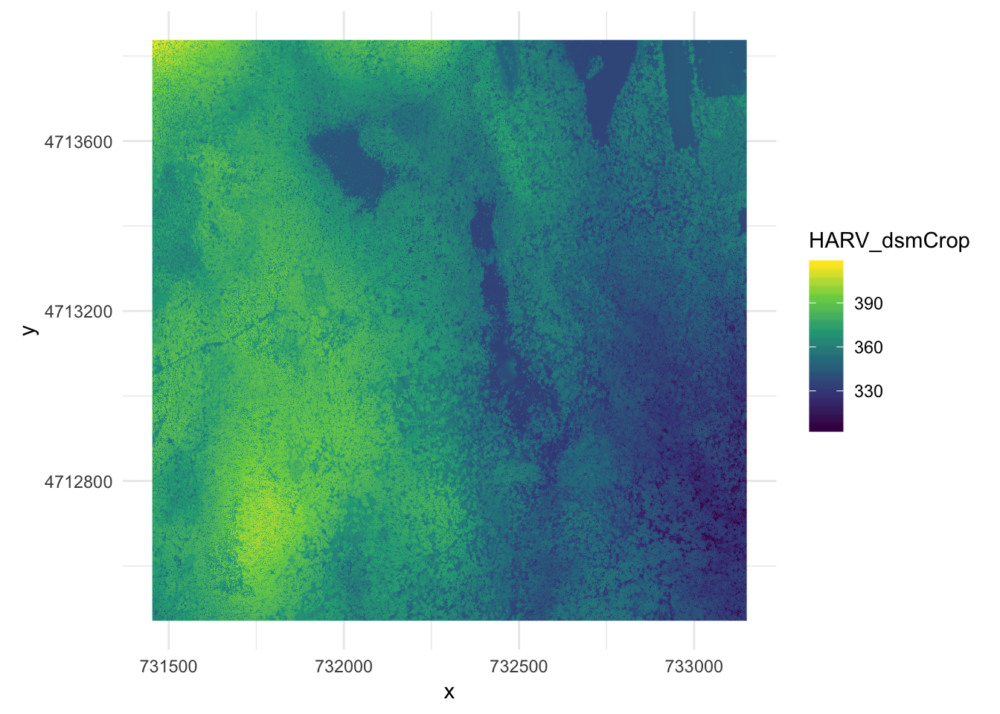
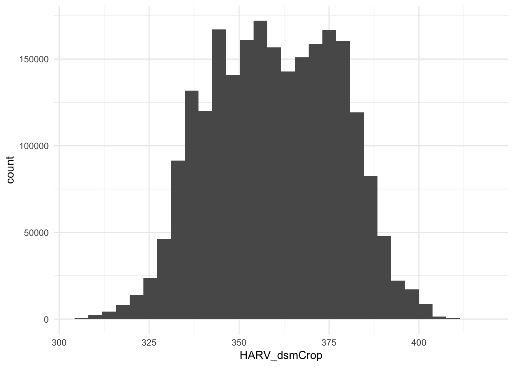

Questions:
Objectives:
Installing the raster and rgdal packages: install.packages(“raster”).
Note that for raster package you might need to install sp package using install.packages(“sp”) as well as install.packages(“rgdal”)
library(raster)## Loading required package: splibrary(rgdal)## rgdal: version: 1.4-4, (SVN revision 833)
## Geospatial Data Abstraction Library extensions to R successfully loaded
## Loaded GDAL runtime: GDAL 2.1.3, released 2017/20/01
## Path to GDAL shared files: /Library/Frameworks/R.framework/Versions/3.6/Resources/library/rgdal/gdal
## GDAL binary built with GEOS: FALSE
## Loaded PROJ.4 runtime: Rel. 4.9.3, 15 August 2016, [PJ_VERSION: 493]
## Path to PROJ.4 shared files: /Library/Frameworks/R.framework/Versions/3.6/Resources/library/rgdal/proj
## Linking to sp version: 1.3-1library(tidyverse)## Registered S3 methods overwritten by 'ggplot2':
## method from
## [.quosures rlang
## c.quosures rlang
## print.quosures rlang## ── Attaching packages ──────────────────────────── tidyverse 1.2.1 ──## ✔ ggplot2 3.1.1 ✔ purrr 0.3.2
## ✔ tibble 2.1.3 ✔ dplyr 0.8.1
## ✔ tidyr 0.8.3 ✔ stringr 1.4.0
## ✔ readr 1.3.1 ✔ forcats 0.4.0## ── Conflicts ─────────────────────────────── tidyverse_conflicts() ──
## ✖ tidyr::extract() masks raster::extract()
## ✖ dplyr::filter() masks stats::filter()
## ✖ dplyr::lag() masks stats::lag()
## ✖ dplyr::select() masks raster::select()# set the ggplot theme to minimal upfront
theme_set(theme_minimal())You should already have the data…
First, let’s view the Raster file attributes
We will be working with a series of GeoTIFF files in this lesson. The GeoTIFF format contains a set of embedded tags with metadata about the raster data. We can use the function GDALinfo() to get information about our raster data before we read that data into R. It is ideal to do this before importing your data.
GDALinfo("data/NEON-DS-Airborne-Remote-Sensing/HARV/DSM/HARV_dsmCrop.tif")## rows 1367
## columns 1697
## bands 1
## lower left origin.x 731453
## lower left origin.y 4712471
## res.x 1
## res.y 1
## ysign -1
## oblique.x 0
## oblique.y 0
## driver GTiff
## projection +proj=utm +zone=18 +datum=WGS84 +units=m +no_defs
## file data/NEON-DS-Airborne-Remote-Sensing/HARV/DSM/HARV_dsmCrop.tif
## apparent band summary:
## GDType hasNoDataValue NoDataValue blockSize1 blockSize2
## 1 Float64 TRUE -9999 1 1697
## apparent band statistics:
## Bmin Bmax Bmean Bsd
## 1 305.07 416.07 359.8531 17.83169
## Metadata:
## AREA_OR_POINT=AreaWe can store this information in R
HARV_dsmCrop_info <- capture.output(
GDALinfo("data/NEON-DS-Airborne-Remote-Sensing/HARV/DSM/HARV_dsmCrop.tif")
)Each line of text that was printed to the console is now stored as an element of the character vector HARV_dsmCrop_info. We will be exploring this data throughout this episode. By the end of this episode, you will be able to explain and understand the output above.
DSM_HARV <-
raster("data/NEON-DS-Airborne-Remote-Sensing/HARV/DSM/HARV_dsmCrop.tif")
DSM_HARV## class : RasterLayer
## dimensions : 1367, 1697, 2319799 (nrow, ncol, ncell)
## resolution : 1, 1 (x, y)
## extent : 731453, 733150, 4712471, 4713838 (xmin, xmax, ymin, ymax)
## crs : +proj=utm +zone=18 +datum=WGS84 +units=m +no_defs +ellps=WGS84 +towgs84=0,0,0
## source : /Users/darya/Dropbox (Sydney Uni)/Training/19_09_11_ResBaz/19_01_11_ResBazGIS/data/NEON-DS-Airborne-Remote-Sensing/HARV/DSM/HARV_dsmCrop.tif
## names : HARV_dsmCrop
## values : 305.07, 416.07 (min, max)summary(DSM_HARV)## Warning in .local(object, ...): summary is an estimate based on a sample of 1e+05 cells (4.31% of all cells)## HARV_dsmCrop
## Min. 305.26
## 1st Qu. 345.70
## Median 359.71
## 3rd Qu. 374.36
## Max. 415.10
## NA's 0.00Note the warning - unless you force R to calculate these statistics using every cell in the raster, it will take a random sample of 100,000 cells and calculate from that instead. To force calculation on more, or even all values, you can use the parameter maxsamp:
summary(DSM_HARV, maxsamp = ncell(DSM_HARV))## HARV_dsmCrop
## Min. 305.07
## 1st Qu. 345.59
## Median 359.67
## 3rd Qu. 374.28
## Max. 416.07
## NA's 0.00Convert it to a dataframe in order to plot it using ggplot2
DSM_HARV_df <- as.data.frame(DSM_HARV, xy = TRUE)Can see a standard dataframe format
str(DSM_HARV_df)## 'data.frame': 2319799 obs. of 3 variables:
## $ x : num 731454 731454 731456 731456 731458 ...
## $ y : num 4713838 4713838 4713838 4713838 4713838 ...
## $ HARV_dsmCrop: num 409 408 407 407 409 ...Let’s use ggplot to plot the raster.
We will set the color scale to scale_fill_viridis_c which is a color-blindness friendly color scale. We will also use the coord_quickmap() function to use an approximate Mercator projection for our plots. This approximation is suitable for small areas that are not too close to the poles. Other coordinate systems are available in ggplot2 if needed, you can learn about them at their help page ?coord_map. (DEMO this here)
DSM_HARV_df %>%
ggplot() +
geom_raster(aes(x = x, y = y, fill = HARV_dsmCrop)) + scale_fill_viridis_c() +
coord_quickmap()
We can view the CRS string associated with our R object using the crs() function.
# Challenge: What units are our data in?
crs(DSM_HARV)## CRS arguments:
## +proj=utm +zone=18 +datum=WGS84 +units=m +no_defs +ellps=WGS84
## +towgs84=0,0,0Understanding CRS in Proj4 Format:
It is useful to know the minimum or maximum values of a raster dataset. In this case, given we are working with elevation data, these values represent the min/max elevation range at our site.
minValue(DSM_HARV)## [1] 305.07maxValue(DSM_HARV)## [1] 416.07If the minimum and maximum values haven’t already been calculated, we can calculate them using the setMinMax() function.
DSM_HARV <- setMinMax(DSM_HARV)We can use the raster() function to import one single band from a single or multi-band raster. We can view the number of bands in a raster using the nlayers() function.
nlayers(DSM_HARV)## [1] 1Raster data often has a NoDataValue associated with it. This is a value assigned to pixels where data is missing or no data were collected.
Challenge: Use the output from the GDALinfo() function to find out what NoDataValue is used for our DSM_HARV dataset.
GDALinfo("data/NEON-DS-Airborne-Remote-Sensing/HARV/DSM/HARV_dsmCrop.tif")## rows 1367
## columns 1697
## bands 1
## lower left origin.x 731453
## lower left origin.y 4712471
## res.x 1
## res.y 1
## ysign -1
## oblique.x 0
## oblique.y 0
## driver GTiff
## projection +proj=utm +zone=18 +datum=WGS84 +units=m +no_defs
## file data/NEON-DS-Airborne-Remote-Sensing/HARV/DSM/HARV_dsmCrop.tif
## apparent band summary:
## GDType hasNoDataValue NoDataValue blockSize1 blockSize2
## 1 Float64 TRUE -9999 1 1697
## apparent band statistics:
## Bmin Bmax Bmean Bsd
## 1 305.07 416.07 359.8531 17.83169
## Metadata:
## AREA_OR_POINT=Area# 9999Examples of Bad Data Values:
Plotting data with appropriate highlighting can help reveal patterns in bad values and may suggest a solution. Below, reclassification is used to highlight elevation values over 400m with a contrasting colour.
Create A Histogram of Raster Values:
DSM_HARV_df %>%
ggplot() +
geom_histogram(aes(HARV_dsmCrop))## `stat_bin()` using `bins = 30`. Pick better value with `binwidth`.
# Challenge
#Use GDALinfo() to determine the following about the NEON-DS-Airborne-Remote-Sensing/HARV/DSM/HARV_DSMhill.tif file:
# 1.Does this file have the same CRS as DSM_HARV?
# 2. What is the NoDataValue?
# 3. hat is resolution of the raster data?
# 4. How large would a 5x5 pixel area be on the Earth’s surface?
# 5. Is the file a multi- or single-band raster?Notice: this file is a hillshade. We will (not) learn about hillshades in the Working with Multi-band Rasters in R episode.
The GeoTIFF file format includes metadata about the raster data.
To plot raster data with the ggplot2 package, we need to convert it to a dataframe.
R stores CRS information in the Proj4 format.
Be careful when dealing with missing or bad data values.